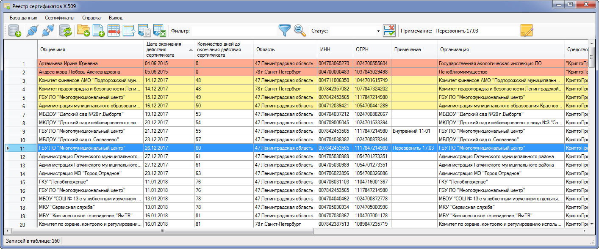

Программное средство "Реестр сертификатов X.509" предназначено для ведения реестра и каталогизации цифровых сертификатов X.509 и позволяет выполнять анализ (разбор), поиск и вывод информации, содержащейся в сертификатах ключей проверки электронной подписи (СКПЭП).

Главное окно программного средства "Реестр сертификатов X.509"
Основные функциональные возможности:
Ведение реестра сертификатов. Пакетный ввод и удаление сертификатов. Извлечение информации из сертификатов и представление ее в виде табличных данных (данные сохраняются в локальной файловой базе данных SQLite).
Создание, копирование, удаление базы данных сертификатов.
Возможность работы с несколькими базами данных, между которыми возможно копирование занесенной информации.
Экспорт отдельных сертификатов, экспорт таблицы данных в формате книги Excel, *.CSV.
Поиск в базе данных по содержимому заданных объектных идентификаторов (OID), фильтрация.
Оповещение оператора об окончании сроков действия сертификата и ключа подписи.
Возможность задания дополнительных полей "Примечание" и "Статус" для удобства работы оператора.
Настраиваемый интерфейс таблицы сертификатов с возможностью перемещения/сокрытия столбцов данных.
Поддерживается расширяемый список столбцов:
Уникальный идентификатор сертификата
Серийный номер
Общее имя (Common Name, OID 2.5.4.3)
Фамилия (Surname, OID 2.5.4.4)
Имя, отчество (Given Name, OID 2.5.4.42)
Физическое/юридическое лицо
Дата окончания действия сертификата, количество дней до окончания действия сертификата
Дата окончания действия ключа, количество дней до окончания действия ключа (дополнение OID 2.5.29.16)
Организация (OID 2.5.4.8)
Область (OID 2.5.4.10)
Примечание
Статус
Средство электронной подписи (OID 1.2.643.100.111)